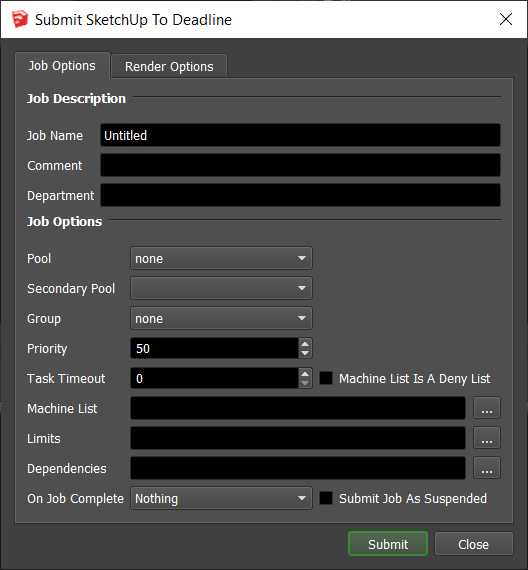
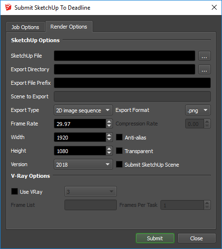
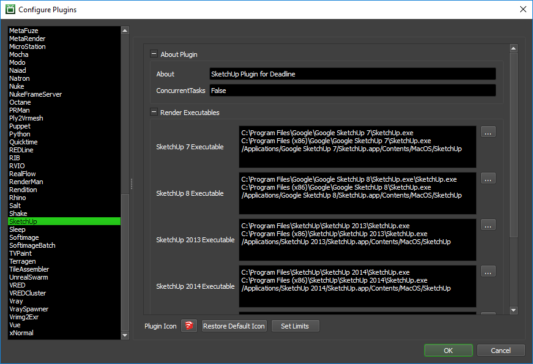

SketchUp¶
Job Submission¶
You can submit jobs from within SketchUp by installing the integrated submission script, or you can submit them from the Monitor. The instructions for installing the integrated submission script can be found further down this page.
To submit from within SketchUp, select ‘Plugins’ -> ‘Submit To Deadline’.
 Submission Options¶
The general Deadline options are explained in the Job Submission documentation. The SketchUp specific options are:
SketchUp File: The file to be exported.
Export Directory: The export destination folder.
Export File Prefix: The file prefix of the export.
Scene to Export: The scene/page in the scene to export (if blank, uses information from SketchUp file).
Export Type: The type of export (3D model, 2D image sequence or 2D image).
Export Format: The file format of the export file (ie. .3ds, .png, etc.).
Frame Rate: Enabled if exporting an image sequence, determines frequency of images (in frames per second).
Compression Rate: Float compression factor for JPEG images (between 0.0 and 1.0, lower is smaller size, larger is better quality).
Width: Width of image in pixels (if 0, uses information from SketchUp file).
Height: Height of image in pixels (if 0, uses information from SketchUp file).
Anti-alias: Enables image anti-aliasing.
Transparent: Enables image Transparency.
Version: The version of SketchUp to use.
Use V-Ray: Enable this option to use V-Ray’s renderer instead of SketchUp’s renderer. This requires the V-Ray for SketchUp plugin to be installed on your render nodes.
Plugin Configuration¶
You can configure the SketchUp plugin settings from the Monitor. While in power user mode, select Tools -> Configure Plugins and select the SketchUp plugin from the list on the left.
Render Executables
SketchUp Executable: The path to the SketchUp executable file used for rendering. Enter alternative paths on separate lines. Different executable paths can be configured for each version installed on your render nodes.
Integrated Submission Script Setup¶
The following procedures describe how to setup the integrated SketchUp submission script for Deadline. This script has been tested with SketchUp 7 and later.
You can either run the Submitter installer or manually install the submission script.
Submitter Installer¶
Run the Submitter Installer located at
<Repository>/submission/SketchUp/Installers.
Manual Installation¶
Windows:
Copy the file
[Repository]/submission/SketchUp/Client/DeadlineSketchUpClient.rbto [SketchUp Plugin Directory] which will look different depending on your version of SketchUp.SketchUp 8 and earlier, the plugin directory may look something like this,
C:\Program Files\Google\Google SketchUp #\pluginsSketchUp 2013, the plugin directory may look something like this,
C:\Program Files\SketchUp\SketchUp 2013\pluginsSketchUp 2014, the plugin directory may look something like this,
C:\Users\[User]\AppData\Roaming\SketchUp\SketchUp 2014\SketchUp\Plugins
macOS:
Copy the file
[Repository]/submission/SketchUp/Client/DeadlineSketchUpClient.rbto [SketchUp Plugin Directory] which will look different depending on your version of SketchUp.SketchUp 8 and earlier, the plugin directory may look something like this,
/Library/Application Support/Google SketchUp #/SketchUp/pluginsSketchUp 2013 and later, the plugin directory may look something like this (Note: it may have to be in the specific user’s /Library/ directory as of 2014),
/Library/Application Support/SketchUp #/plugins
FAQ¶
Which versions of SketchUp are supported by Deadline?
The commercial Pro versions of SketchUp 7 to 2018 are supported.
Error Messages and Meanings¶
This is a collection of known SketchUp error messages and their meanings, as well as possible solutions. We want to keep this list as up to date as possible, so if you run into an error message that isn’t listed here, please contact Deadline Support and let us know.
SketchUp Pro splash screen must be accepted
For SketchUp Pro, by default when it opens it will present a pop-up that must be acknowledged. If you do not unselect the ‘show at startup’ checkbox, Deadline is unable to start rendering. Ensure this is handled/configured prior to network rendering.

{kind=link}
{kind=link}
{kind=link}